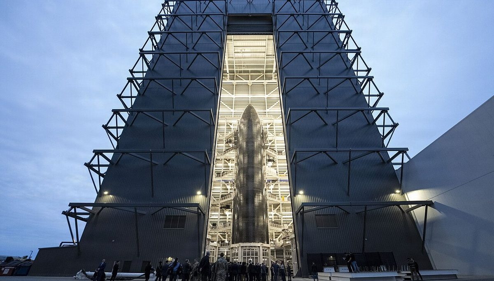

"Catching a Starship from space"
Two days after the first ship catch, SpaceX released the view from the ship and the tower, and Musk explained what changes before the next one.
"Don't Panic," SpaceX titled the onboard footage it posted at 11:35 a.m. EST Monday: "Riding on Starship 42 during final approach to catch." Musk quoted it at 2:16 p.m. with "Catching a Starship from space," and the post drew more than 29,000 likes. When SpaceX followed at 3:30 p.m. with "Views from Mechazilla of the first ever Starship catch," he shared it as the "View of Starship landing from the tower." Early Tuesday he posted two words on their own: "Starship 42."
Steel wool where the arms touch
Robin, who posts as @xdNiBoR, shared a close-up video on Monday: "You can really see the ablative getting scraped off by the chopsticks." Musk answered at 9:05 p.m. EST:
"That will be replaced with stainless steel wool for future flights."
Space YouTuber Marcus House called the answer "interesting, and to me at least confusing," asking whether it meant "some sort of material that survives entry and doesn't scrape off?" Musk replied "Yes." TeslaNorth noted that the change concerns the material scraped at the catch points, not the ship's whole tiled heat shield, and that Musk did not name the first flight to carry it.


"Only ONE fell off"
Tim Dodd of Everyday Astronaut pointed out that "Starship has about 18,000 tiles and only ONE fell off. That's already about a 99.995% reliability rate. They'll keep chasing those 9's too." Musk agreed at 8:43 p.m. EST: "Yeah."
Old hands at the tower
Tesla Owners Silicon Valley posted a clip of Tom Mueller, SpaceX's founding propulsion engineer, saying that "@elonmusk really gets the best out of everybody, and that's why that company is so incredible." Musk quoted it at 2:08 a.m. EST Tuesday: "Was good to see @lrocket & @HansKoenigsmann at the first ship catch," naming Mueller and Hans Koenigsmann, another of the company's early engineers.
Bigger than a Culture ship
Yun-Ta Tsai posted an image with the line "Starship is no longer the smallest ship compared to the Culture. Respectable achievement," a nod to the starships of Iain M. Banks's novels. "Cool," Musk wrote.
"Cyber-Inception." A music video made by Kenneth Shock, who has ALS and uses a Neuralink brain implant, was "made entirely using @Cyborg21's neuralink implant," the account anabology wrote. Musk quoted it with one word: "Cyber-Inception." Shock's notes credit Suno and Claude for the music and lyrics.